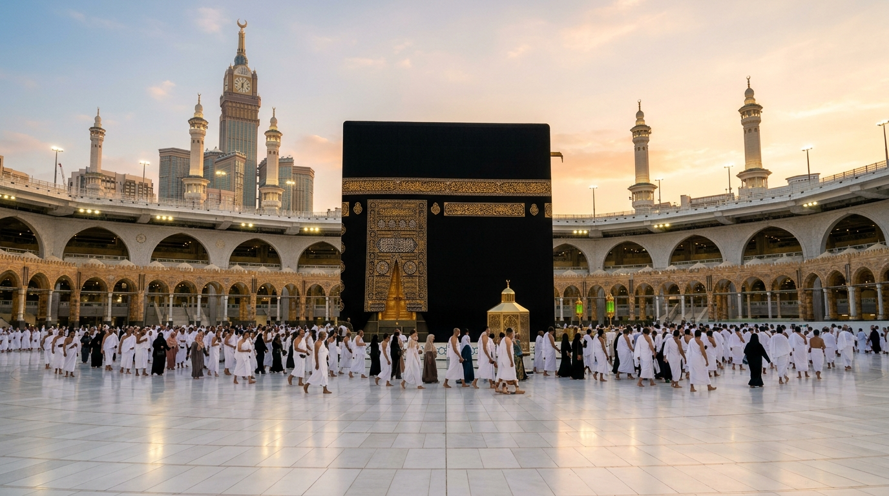

الكعبة المشرفة وبيت الله الحرام
الكعبة المشرفة هي أول بيت وُضع للناس في الأرض لعبادة الله وحده لا شريك له، بناها خليل الله إبراهيم وابنه إسماعيل عليهما السلام، وتتوسط صحن المطاف بالمسجد الحرام في مكة المكرمة. يكسوها ثوب من الحرير الخالص الموشى بالذهب والفضة، وتتوجه إليها قلوب أكثر من ملياري مسلم حول العالم في كل صلاة.
رسالة ترحيبية عن الحج وفضائله
رحلة العمر الروحانية التي تهفو إليها أفئدة المؤمنين، وتتجسد فيها معاني التوحيد والمساواة والامتثال لأمر رب العالمين.
﴿ وَأَذِّنْ فِي النَّاسِ بِالْحَجِّ يَأْتُوكَ رِجَالًا وَعَلَىٰ كُلِّ ضَامِرٍ يَأْتِينَ مِنْ كُلِّ فَجٍّ عَمِيقٍ • لِيَشْهَدُوا مَنَافِعَ لَهُمْ وَيَذْكُرُوا اسْمَ اللَّهِ فِي أَيَّامٍ مَعْلُومَاتٍ ﴾
مغفرة الذنوب والولادة الجديدة
الحج المبرور تطهير للروح ونقاء للسريرة؛ قال رسول الله ﷺ: «مَنْ حَجَّ لِلَّهِ فَلَمْ يَرْفُثْ، وَلَمْ يَفْسُقْ، رَجَعَ كَيَوْمِ وَلَدَتْهُ أُمُّهُ»، وقال ﷺ: «وَالْحَجُّ الْمَبْرُورُ لَيْسَ لَهُ جَزَاءٌ إِلَّا الْجَنَّةُ».
وحدة الأمة الإسلامية والمساواة
يجتمع في الحج ملايين المسلمين من كل بقاع الأرض، من مختلف الأجناس والألوان واللغات، يرتدون جميعاً زياً أبيض موحداً متجردين من مظاهر الدنيا، يقفون في صعيد واحد خاشعين لله الواحد القهار.
إحياء سنّة إبراهيم عليه السلام
يستحضر الحاج في كل مشعر قصة التضحية والإخلاص لخليل الله إبراهيم وزوجه هاجر وابنه إسماعيل، من بناء البيت، والسعي بين الصفا والمروة، ورمي الجمرات، فكلها شعائر تزرع في النفس التسليم لله.
شرح الطواف وأهميته في الحج
الطواف هو الدوران التعبدي حول الكعبة المشرفة، وهو صلاة يسبح فيها الطائف مع ملائكة السماء وحركة الكون في خضوع لله عز وجل.
النية والطهارة
ينوي الحاج الطواف تقرباً لله تعالى، ويشترط للطواف الطهارة الكاملة من الحدثين الأصغر والأكبر وستر العورة، لأن الطواف بالبيت بمنزلة الصلاة.
البداية من الحجر الأسود
يبدأ كل شوط من محاذاة الحجر الأسود؛ فيستلمه الحاج ويقبله إن تيسر دون إيذاء، أو يشير إليه بيده اليمنى قائلاً: «بِسْمِ اللَّهِ، وَاللَّهُ أَكْبَرُ».
الدوران عكس عقارب الساعة
يجعل الطائف الكعبة المشرفة عن يساره ويدور حولها عكس اتجاه عقارب الساعة، ويكون طوافه خارج حجر إسماعيل، فمن طاف داخل الحجر لم يصح شوطه لأنه جزء من الكعبة.
إتمام سبعة أشواط كاملة
يتم الحاج سبعة أشواط تامة متتالية، يكثر فيها من الذكر والدعاء وتلاوة القرآن، ويختم كل شوط بمحاذاة الحجر الأسود، ثم يصلي ركعتين خلف مقام إبراهيم.
| نوع الطواف | وقته وحكمه | أهميته وفضله |
|---|---|---|
| طواف القدوم (طواف التحية) | سنة للمفرد والقارن عند أول وصوله إلى مكة المكرمة. | تحية للبيت العتيق وإعلان لبدء مناسك الحج. |
| طواف الإفاضة (طواف الزيارة / الفرض) | ركن من أركان الحج لا يصح الحج إلا به، يؤدى يوم النحر بعد عرفة ومزدلفة. | هو الطواف الأعظم في الحج، وبه يتحلل الحاج التحلل الأكبر. |
| طواف الوداع | واجب على كل حاج قبل مغادرة مكة إلى بلده (ما عدا الحائض والنفساء). | يكون آخر عهد الحاج بالبيت الحرام امتثالاً لحديث النبي ﷺ. |
| طواف التطوع | مستحب في أي وقت من ليل أو نهار أثناء الإقامة بمكة. | من أعظم القربات؛ بكل خطوة يرفع الله بها درجة ويحط بها خطيئة. |
مناسك الحج خطوة بخطوة
تتبع الأيام الفاضلة من ذي الحجة التي يؤدي فيها ضيوف الرحمن أعظم مناسك العمر.
الإحرام والانطلاق للمبيت بمنى
يُحرم الحاج من مكانه، ويلبي قائلاً: «لبيك اللهم حجاً»، ثم يتجه إلى مِنى فيصلي بها الظهر والعصر والمغرب والعشاء وفجر يوم عرفة قصراً بلا جمع، ويبيت بها اتباعاً لسنة النبي ﷺ.
الوقوف بصعيد عرفات والمبيت بمزدلفة
«الحج عرفة»؛ يقف الحجاج في عرفات متبتلين بالدعاء والتضرع من الزوال حتى غروب الشمس، ثم يفيضون بعد الغروب إلى مُزدلفة ويصلون بها المغرب والعشاء جمع تأخير، ويبيتون هناك ويلتقطون الحصى.
رمي جمرة العقبة والنحر والحلق وطواف الإفاضة
أعظم أيام الحج؛ يرمي الحاج جمرة العقبة الكبرى بسبع حصيات، ثم ينحر هديه، ويحلق شعره أو يقصره، ثم يفيض إلى الحرم ليطوف طواف الإفاضة ويسعى بين الصفا والمروة.
المبيت بمنى ورمي الجمرات الثلاث وطواف الوداع
يبيت الحاج ليالي التشريق بمنى، ويرمي كل يوم الجمرات الثلاث (الصغرى فالوسطى فالكبرى) بعد الزوال. وبعد انتهاء المناسك يودع مكة المكرمة بطواف الوداع قبل سفره.
اختبر معلوماتك عن الحج والطواف
أسئلة تعليمية شيقة أعدها طلاب فصل 4/6 ب لزملائهم وزوار النشاط
شكر وتقدير لمبدعي النشاط
نتقدم بجزيل الشكر وفائق التقدير لفرسان فصل 4/6 ب في مدرسة رياض خاصة على مشاركتهم الفاعلة وشغفهم الكبير في تصميم وتنفيذ هذا النشاط التعليمي والتفاعلي المتميز عن الركن الخامس من أركان الإسلام.